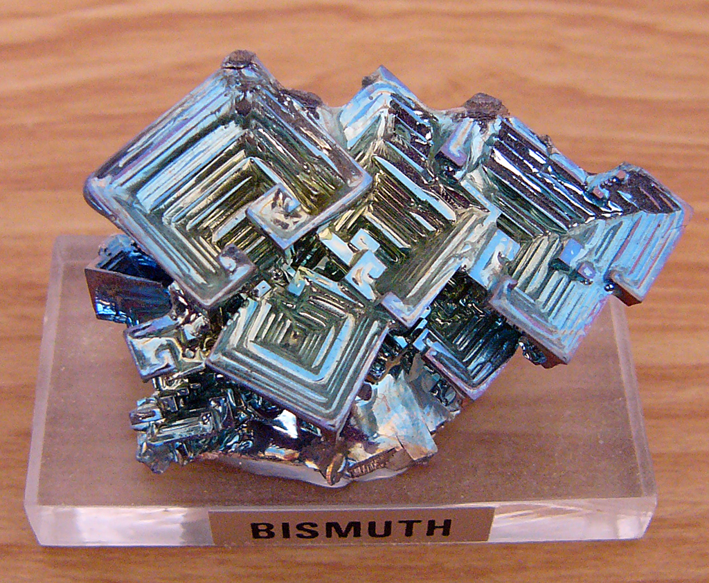

Bismuth Crystals

Description:
Make your own gorgeous bismuth crystal at home! A beautiful display and easy science experiment.
Materials:
- 50 g solid bismuth ingots
- Ladle
- Pre-heated ceramic bowl or pot
Procedure:
- Place the ingots in a ladle and position the ladle over a stove flame.
- Heat on high for 2-5 miutes until the bismuth fully melts.
- Slightly rock the ladle to observe the ripples on the surface of the liquid. Once the crystals begin to grow and the ripples subside, pour out the remaining liquid in a pre-heated waste container.
- Allow enough time for the ladle to cool before attempting to remove the crystal.